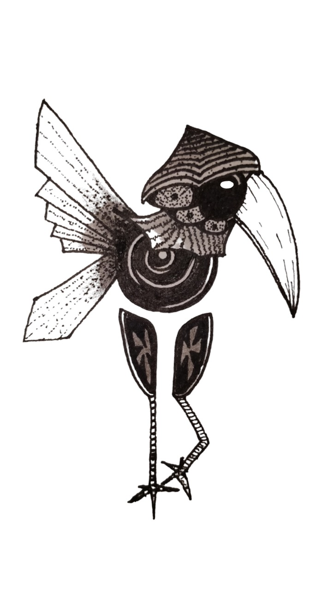

During the 17th century sightings of golden bird-like
creatures were spotted throughout the livelihood in major trade centers of the world. Grayish, claylike figures with shimmering wings, round body, the size of a pear with large, expressive black eyes under the hood of a protective cap along with a beak and legs that were twice the size of its body. They were often sighted in a secret corner of any given shop people would frequent often.
Oftentimes people would mistake them for nothing more than mere playthings placed by children in order to evoke some sense of surprise or a simple prank.
It was believed that Brinklings appeared to people in dire economical dismay but also to those who were privileged with riches. Upon encountering a brinkling, the finder was given a choice of offering a posssession of personal value to it, signified by the brinkling appearing to signal the ritual by reflecting the most valuable object of the person in its eyes.
In return, the brinkling presented a golden nugget to the finder, regardless if the personal object had more or less value in terms of currency. Believed to be a trial of morality, one could say that respecting the ritual would reward the finder with something of more value than the nugget, leaving both ends content and joyful.
However, if one were to simply steal the nugget, the thief would be stricken with tragedies. Family would succumb to sudden illnesses, a flood could wipe out a good year's harvest etc. In some cases it was said that violent brutes who tried to attack the brinkling would disappear into thin air.
(According to sages/magicians, one would be absorbed by the spiral on the brinklings body)
Sightings of this elusive creature has unfortunately dwindled in the past centuries. It is said they still linger throughout areas with strong spiritual energy. The most recent encounter was in 1925 in New Vogland's Nova Avis church. An artist is said to have seen a brinkling perched on top of a dusty old shelf in the souvenir shop. As they have parted ways, the artist managed to draw an image of the brinkling which til tis day remains one of the most recent depictions of a brinkling.
